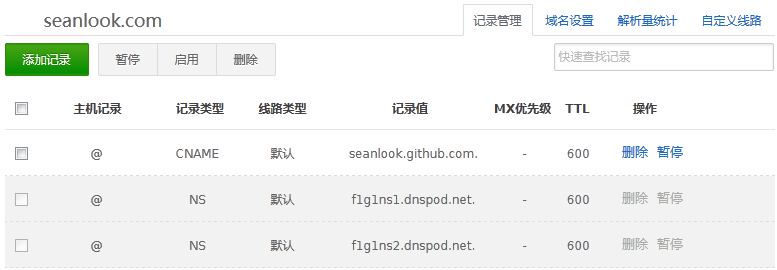

1、什么是域名解析？
域名解析就是国际域名或者国内域名以及中文域名等域名申请后做的到IP地址的转换过程。IP地址是网路上标识您站点的数字地址，为了简单好记，采用域名来代替ip地址标识站点地址。域名的解析工作由DNS服务器完成。

2、什么是A记录？
A (Address) 记录是用来指定主机名（或域名）对应的IP地址记录。用户可以将该域名下的网站服务器指向到自己的web server上。同时也可以设置您域名的二级域名。

3、什么是CNAME记录？
即：别名记录。这种记录允许您将多个名字映射到另外一个域名。通常用于同时提供WWW和MAIL服务的计算机。例如，有一台计算机名为“host.mydomain.com”（A记录）。它同时提供WWW和MAIL服务，为了便于用户访问服务。可以为该计算机设置两个别名（CNAME）：WWW和MAIL。这两个别名的全称就http://www.mydomain.com/和“mail.mydomain.com”。实际上他们都指向“[host.mydomain.com](http://host.mydomain.com/)”。

4、使用A记录和CNAME进行域名解析的区别
A记录就是把一个域名解析到一个IP地址（Address，特制数字IP地址），而CNAME记录就是把域名解析到另外一个域名。其功能是差不多，CNAME将几个主机名指向一个别名，其实跟指向IP地址是一样的，因为这个别名也要做一个A记录的。但是使用CNAME记录可以很方便地变更IP地址。如果一台服务器有100个网站，他们都做了别名，该台服务器变更IP时，只需要变更别名的A记录就可以了。
5、使用A记录和CNAME哪个好？
域名解析CNAME记录A记录哪一种比较好？如果论对网站的影响，就没有多大区别。但是：CNAME有一个好处就是稳定，就好像一个IP与一个域名的区别。服务商从方便维护的角度，一般也建议用户使用CNAME记录绑定域名的。如果主机使用了双线IP，显然使用CNAME也要方便一些。
A记录也有一些好处，例如可以在输入域名时不用输入WWW.来访问网站哦！从SEO优化角度来看，一些搜索引擎如alex或一些搜索查询工具网站等等则默认是自动去掉WWW.来辨别网站，CNAME记录是必须有如：WWW(别名)前缀的域名，有时候会遇到这样的麻烦，前缀去掉了默认网站无法访问。
有人认为，在SEO优化网站的时候，由于搜索引擎找不到去掉WWW.的域名时，对网站权重也会有些影响。因为有些网民客户也是不喜欢多写三个W来访问网站的，网站无法访问有少量网民客户会放弃继续尝试加WWW.访问域名了，因此网站访问浏览量也会减少一些。
也有人认为同一个域名加WWW.和不加WWW.访问网站也会使网站权重分散，这也是个问题。但是可以使用301跳转把不加WWW.跳转到加WWW.的域名，问题就解决了。